01‘민감한 사람’과 ‘지금 과부하인 순간’은 다릅니다
민감성은 사람마다 거의 일정하지만, 부담은 같은 사람에게도 하루에 몇 번씩 크게 오르내립니다.
부담은 사람의 유형보다 그 순간의 상황에 따라 더 크게 달라졌습니다.
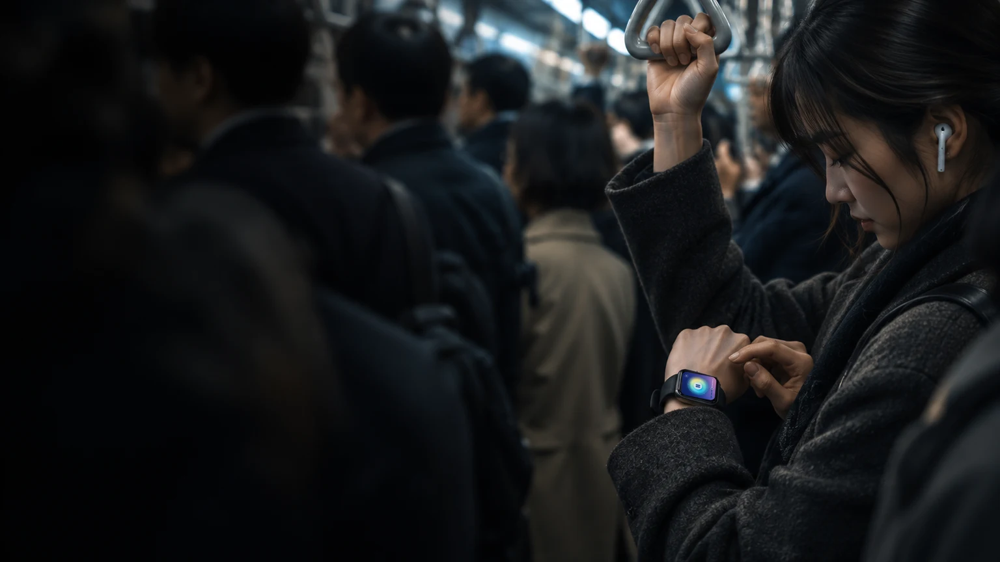
만원 지하철, 멀미 나는 버스처럼 피할 수 없는 순간에 휴대폰 앱이 소음은 줄이고, 화면은 어둡게, 안내는 소리로 바꿔줍니다. 화면을 보기 어려울 땐 이어폰과 워치로 이어서 조절합니다.
지금 조금 힘드신가요?01Overview
감각 부담은 사람마다 다르고, 같은 사람도 피로와 기분, 주변 환경에 따라 달라집니다.
특히 바로 벗어나기 어렵거나 주변을 직접 바꾸기 어려운 순간에는 쓸 수 있는 대응이 줄어듭니다.
기존 서비스는 기록, 체크인, 환경 확인처럼 한 단계씩만 도와서 사용자가 먼저 움직여야 합니다.
그래서 현재 상태와 상황을 함께 보고, 그 순간 가능한 대응을 이어 주는 흐름을 설계했습니다.
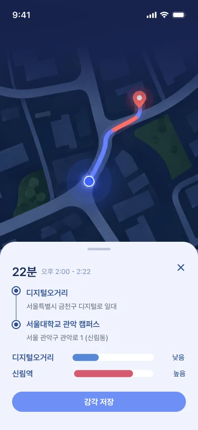
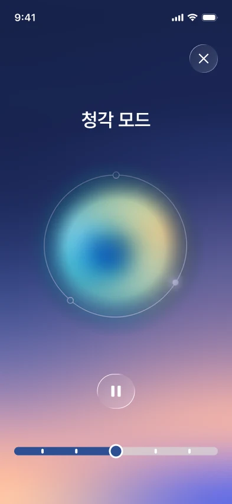
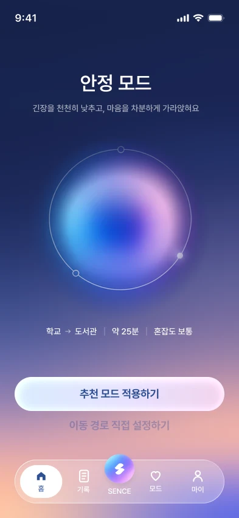
지금 상태와 주변 자극을 함께 살펴봅니다.
지금 가능한 방법을 제안하고,
적용은 사용자가 정합니다.
나아졌는지 확인하고
다음 추천에 반영합니다.
Process · Double Diamond
02Discover · Secondary Research
감각 부담을 겪는 사람들이 그 순간 무엇을 하는지,
선행 연구와 기존 서비스, 커뮤니티 사례로 먼저 살펴봤습니다.
민감성은 사람마다 거의 일정하지만, 부담은 같은 사람에게도 하루에 몇 번씩 크게 오르내립니다.
부담은 사람의 유형보다 그 순간의 상황에 따라 더 크게 달라졌습니다.
감각 부담을 다루는 서비스 · 기술 6개를 대응 단계 5개에 놓고, 단계마다 직접 지원 · 일부 · 없음으로 나눠 봤습니다.
이 데이터에서 본 것
6개 서비스 모두 한 단계만 직접 돕고, 나머지는 일부거나 비어 있었습니다.
4곳이 도왔지만 모두 일부 지원이었고, 실제 실행은 사용자 몫이었습니다.
확인 · 기록 · 조절이 서로 다른 앱에 있어, 사용자가 직접 이어 붙여야 했습니다.
나았던 대응을 기억해 다음 이동에서 먼저 제안하는 서비스는 없었습니다.
서비스별 데이터
커뮤니티 사례를 상황 → 자극 → 상태 → 대응 → 결과로 읽었습니다.
자극의 종류보다 그 상황에서 바꿀 수 있는 것에 따라 쓸 수 있는 대응이 줄어들었습니다.
사례에 나온 자극
쓸 수 있는 대응의 폭
넓음 → 좁음02Discover · Primary Research
기존 서비스와 빈틈은 2차 자료로 충분히 확인해, 1차 조사는 사용자와 함께 만드는 코디자인으로 진행했습니다.
그 순간 무엇을 바라고, 어디까지 맡길 수 있는지 함께 정했습니다.
Research Question
Insights
“한 번의 큰 자극보다 이런 과정이 매일 이어진다는 점이 더 피곤해요.”
참여자 1 · 셀프 일리시테이션 인터뷰
“도움 요청처럼 다른 사람과 연결되는 건 자동으로 하지 않았으면 좋겠어요. 얼마나 심각한지 제가 먼저 판단하고 싶어요.”
참여자 2 · 코디자인 인터뷰
강하거나 오래 쓰면 오히려 불편
혼잡 · 멀미 중엔 화면을 보기 어려움
기능마다 받아들이는 정도가 다름
잘못 적용되면 바로 고칠 수 있어야
반복 알림 · 질문도 부담
편했던 설정을 다시 쓰고 싶음
심박 · HRV는 판정 말고 참고
156개 코드로 나눠 다시 묶었습니다
03Define · Affinity Mapping
셀프 일리시테이션 · 코디자인 · 선행연구에서 나온 말을 코드로 나누고,
비슷한 경험끼리 묶은 뒤 반복되는 패턴만 남겼습니다.
Theme 7개와 대표 발화
포스트잇은 코드에서 대표적인 것만 사용자 말투로 옮겼습니다.
Key Insights
위 Theme 7개를 같은 불편으로 이어지는 것끼리 묶어 인사이트 3개로 정리했습니다.
대응을 바로 시작할 방법이 없습니다.
화면을 보지 않고는 조작하기 어렵습니다.
무엇을 자동으로 맡길지 정할 수 없습니다.
알림과 질문이 또 다른 부담이 됩니다.
남은 불편을 이어서 다룰 방법이 없습니다.
편했던 설정을 다시 쓰기 어렵습니다.
03Define · Persona & User Journey
코디자인 참여자와 커뮤니티 사례에서 나온 경험을 모아 만든 가상의 인물입니다.
평소 감각 부담
출근길 하루
이어폰부터 꽂는다
🙂안내방송과 대화가 겹친다
🙁노이즈 캔슬링을 최대로 켜도 머리가 먹먹하다
😣지금 하는 것
바라는 것
User Journey
시간 · 경로를 매번 따로 확인해야 합니다.
노이즈 캔슬링만으로는 다 막히지 않습니다.
화면을 보고 설정을 찾을 수 없습니다.
03Define · Problem & HMW
피할 수 없는 상황에서 감각 부담이 생기면, 필요한 대응을
바로 실행하기 어렵고, 대응한 뒤에도 불편이 남습니다.
PP01PP02
PP03PP04
PP05PP06
심박 · HRV 같은 생체 데이터로 부담을 미리 알아챌 수 있을까?
PP05생체 데이터는 판정이 아니라 참고로만 쓰기로 해, 이번에는 HMW1~3에 집중하고 HMW4는 이후 과제로 남겼습니다.
어떻게 하면 피할 수 없는 순간에도최소한의 조작으로 감각 대응을 시작하고,남은 불편까지 이어서 조절할 수 있을까요?
04Develop · Ideation
가치제안 캔버스로 기능 방향을 정하고, 아이디어를 우선순위로 고른 뒤 유저 플로우 · IA · 프로토타입으로 이어갔습니다.
Value Proposition Canvas
사용자가 이동 중에 하려는 일, 불편한 점, 바라는 점을 정리하고 서비스 기능과 하나씩 연결했어요. 사용자는 불편한 순간에 바로 대응하고 싶지만, 혼잡하거나 멀미가 나면 화면을 보기 어렵고, 매번 처음부터 설정해야 했습니다.
혼잡 · 멀미로 화면을 보기 어려움
→워치 · 이어폰 한 번 실행대응이 세거나 맞지 않음
→강도 조절 · 즉시 되돌리기매번 처음부터 다시 설정
→감각 저장 · 다음 이동 추천Crazy 8


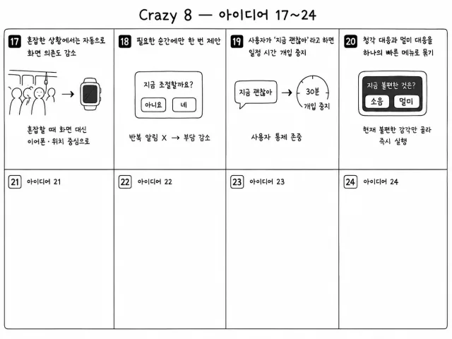
Idea Sketch
화면을 보기 어려운 순간에도 쓸 수 있는지를 기준으로, 방향마다 3~4개씩 손으로 그렸습니다.
A감각 부담 자체를 조절

B현재 상태를 반영

C과거의 편했던 경험 활용
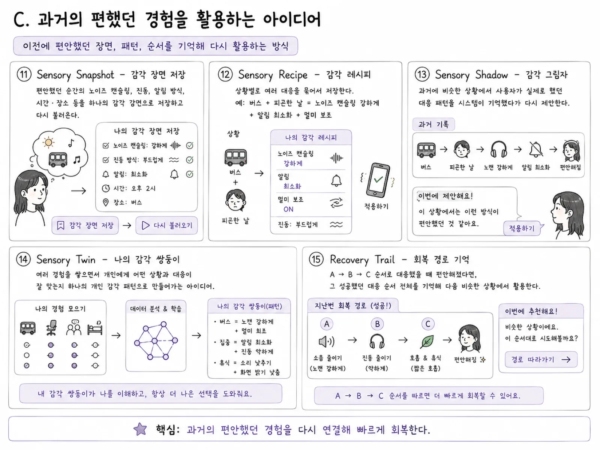
D화면 없이 조작

E즉시 탈출 · 사용자 통제

F1차 대응으로 부족할 때

G·H다른 감각 · 여러 기기로 대응
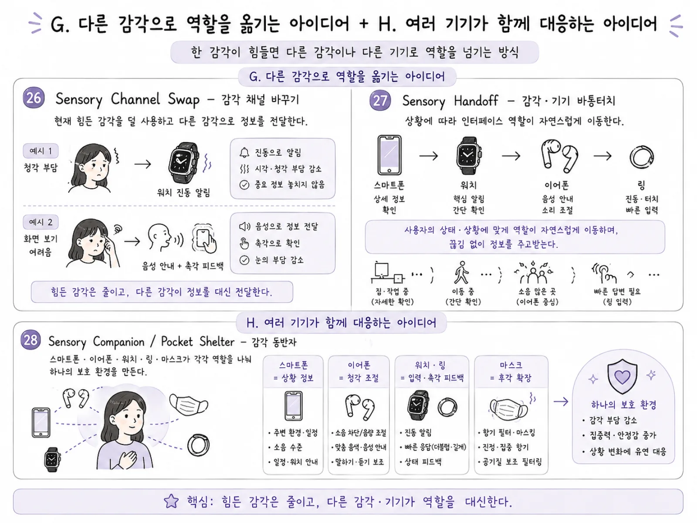
I잠깐 자극에서 벗어나기

J멀미 특화

K상황에 맞춰 미리 준비

Priority Matrix
X축 구현 가능성: 지금의 스마트폰 · 이어폰 · 워치 기술로 만들 수 있는지
Y축 힘든 순간의 사용 편의성: 혼잡하거나 멀미가 날 때 화면을 많이 보지 않고 쓸 수 있는지
프로토타입에 넣은 것02이어폰 한 번 누르기03워치 한 번 탭06즉시 되돌리기05이전 설정 재사용
최우선 10개는 대부분 화면을 보지 않는 입력과 확인이었고, 이 네 가지를 프로토타입의 뼈대로 삼았습니다.
Concept
SENSE — 감각을 알아차리고 조절하는 이동 지원 서비스
01이동 전
감각 자동항법경로와 내 설정으로 미리 준비02부담 발생
SOS 제스처화면 없이 바로 시작03감각별 대응
감각 버블 · 멀미 비시각 모드청각은 소리 조절,04효과 확인
후속 조절유지 · 추가 조절 · 되돌리기 · 종료일부러 만들지 않은 것
“얼마나 심각한지 제가 먼저 판단하고 싶어요.”
사용자가 원하지 않음심박 · HRV는 판정이 아니라 참고로만 쓰기로 함
사용자가 원하지 않음지금 기술로 정확하다고 말할 수 없음
기술로 단정 불가User Flow
이동 전부터 다음 이동까지, 사용자가 판단하는 지점(◇)을 기준으로 흐름을 나눴어요. 보라 선은 사용자가 직접 고르는 길입니다.
Information Architecture
 SENSE
SENSE불편한 순간에 바로 쓰는 기능(청각 · 멀미 · 안정 모드, SOS)은 SENSE 탭 한 곳에 모으고, 기록 · 내 케어처럼 평소에 보는 기능과 나눴어요. 홈의 ‘맞춤 케어 준비’가 이동 전 준비(감각 자동항법)의 입구입니다.
Prototype
감각 수준(2-6)에서 모드를 켜고, 폰을 꺼내기 어려운 순간에는 워치로 이어서 조절 · 저장합니다.
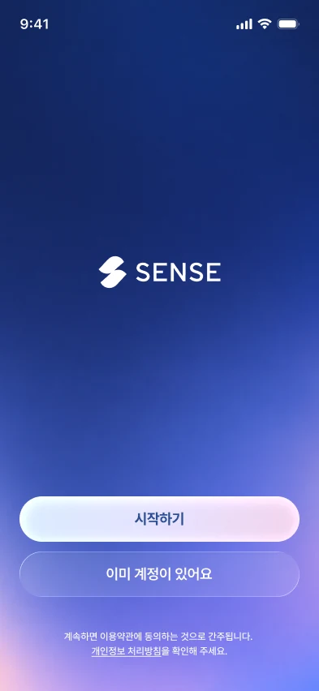
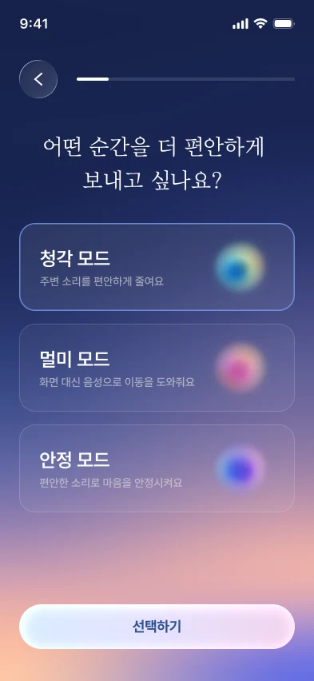

· ‘아니요, 없어요’ 폰만으로 계속 · 나중에 연결
· 이어폰 · 워치 둘 다 선택 가능
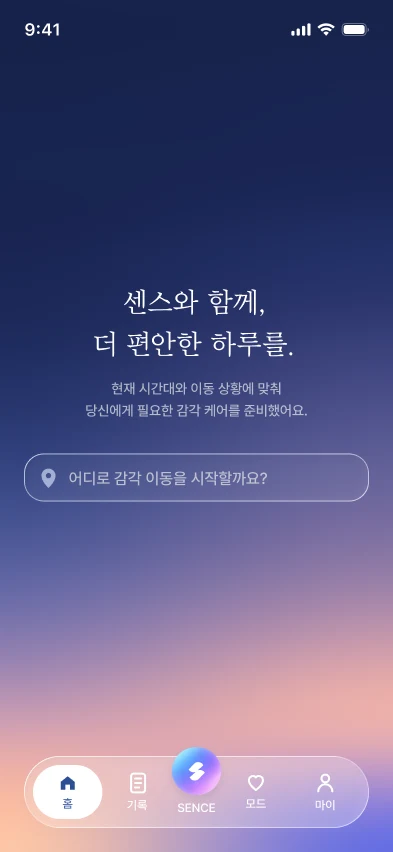
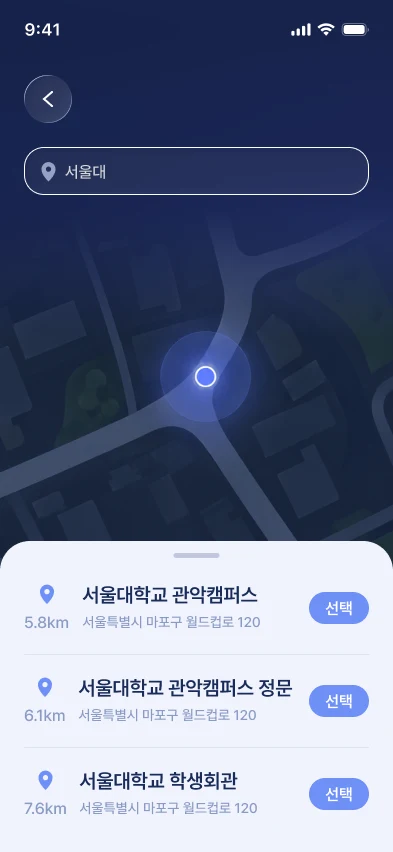
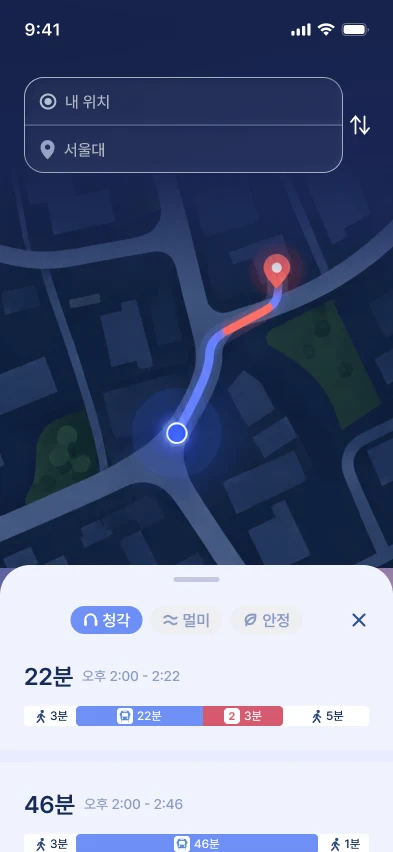
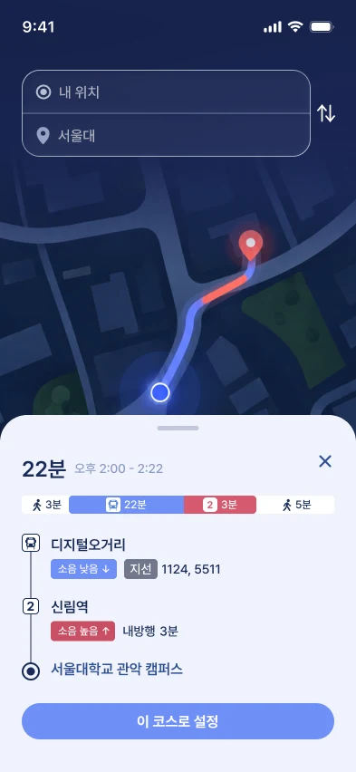
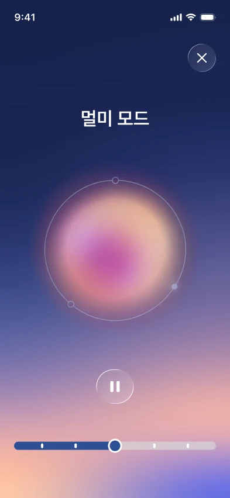
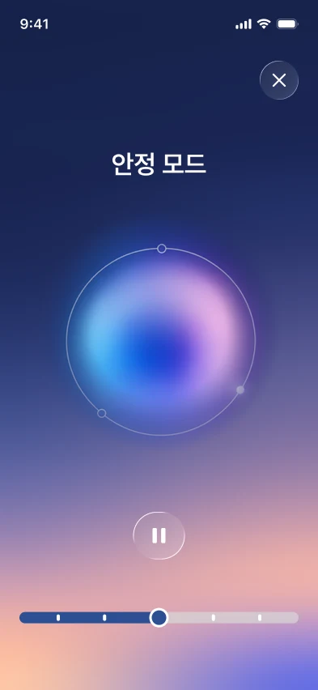
· 멀미 화면 대신 음성 · 진동 안내
· 안정 자연 소리 · 호흡 리듬
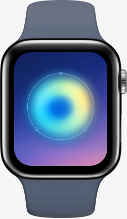

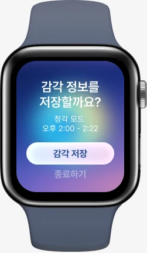

시간만이 아니라 구간마다 소음 · 혼잡을 보여주고, 감각 수준에서 저장해 다음 추천으로 잇습니다.
버튼은 일시정지 하나, 강도는 바 하나. 색 구슬로 지금 켜진 모드를 알 수 있어요.
혼잡해서 폰을 꺼내기 어려울 때, 워치만으로 실행부터 저장까지 끝나요.
Design Criteria
감각 범위
기기 역할
자동화 단계
세 단계 모두 잘못 적용되면 바로 되돌릴 수 있어야 하고, 알림과 질문은 필요한 순간에 한 번만 짧게 개입합니다. 코디자인 인터뷰의 “얼마나 심각한지 제가 먼저 판단하고 싶어요”가 이 구조의 근거예요.
05Deliver · Usability Test
5명과 3개 작업으로 사용성 테스트를 진행하고, 막힌 지점을 화면 수정안으로 정리했습니다.
20~30대 · 모두 이어폰 사용
이동 중 감각 불편 경험
15개 작업 중 12개 성공
부분 성공 2 · 실패 1
작업 직후 체감 난이도
7에 가까울수록 쉬움
최저 75 · 최고 87.5
일반적인 기준 평균 68
Think Aloud 방식, 1인 35~45분. 실제 소음 차단이나 멀미 완화 효과가 아니라, 모드와 감각 정보를 이해하고 고를 수 있는지를 봤습니다. 시안 단계라 5명 대상의 파일럿이며, 수치는 경향으로 읽어 주세요.
Participants
| 참여자 | 연령 | 이동 | 불편한 감각 | 기기 | HSP 평균 |
|---|---|---|---|---|---|
| P1 | 30대 | 출퇴근 · 주 3~5회 | 소리 | 이어폰 | 3.83 |
| P2 | 20대 | 운동 · 공부 · 매일 | 소리 | 이어폰 | 3.72 |
| P3 | 30대 | 이어폰 쓸 때 항상 · 주 3~5회 | 혼잡 | 이어폰 | 4.72 |
| P4 | 20대 | 외출 시 항상 · 주 3~5회 | 소리 | 이어폰 | 4.72 |
| P5 | 30대 | 출퇴근 · 주 3~5회 | 소리 | 이어폰 | 4.44 |
HSP와 SUS의 관계
민감 성향이 높다고 SUS가 높거나 낮지 않았어요. 같은 HSP 4.72인 P3와 P4도 5점 차이가 났습니다. 5명이라 상관을 말할 수는 없고, 민감도보다 작업에서 막힌 지점이 점수 차이를 더 잘 설명했어요.
진단명이나 HSP 점수는 참여 기준으로 쓰지 않았어요. HSP는 동의한 사람만, 모든 평가가 끝난 뒤 성향 참고용으로 받았고 사용성 점수와 합산하지 않았습니다.
Test Script
“시작하기를 눌러주세요.”
관찰처음 어디를 보는지, 무엇을 위한 앱 같다고 말하는지
“주변 소리나 흔들림 때문에 불편했던 경험을 떠올리고, 써 보고 싶은 모드를 하나 골라주세요.”
관찰고른 모드와 이유, 세 모드를 어떻게 구분하는지 · 진행자가 먼저 기능을 설명하지 않음
“평소 가지고 다니는 기기가 있나요? 없다면 ‘아니요’를 골라도 괜찮아요.”
관찰망설임, 기기 연결이 필수라고 오해하는지
“두 버튼을 누르면 각각 어디로 갈 것 같나요?”
관찰누르기 전에 예상 결과를 먼저 묻기
“어떤 정보를 보고 골랐어요? 소리나 혼잡 정보가 눈에 들어왔나요?”
관찰감각 정보를 알아봤는지 · 이해했는지 · 선택을 바꿨는지 · 먼저 ‘조용한 곳을 고르라’고 말하지 않음
모드마다 예시 소리를 들려주고 “어떤 느낌인지 말해주세요.”
관찰청각: 잔잔한 음악 + 노이즈 캔슬링 기대 · 멀미: 알림음 + 음성 안내 · 안정: 자연 소리
“바가 어떤 기능을 하는 것처럼 보이나요?”
관찰시안에서는 작동하지 않으므로 ‘조절되는 것 같은 인상’만 확인
“무엇을 저장했다고 생각하세요? 지금 화면은 무엇을 보여주나요?”
관찰추천 근거(자주 가는 경로 · 시간대)를 먼저 알려주지 않고 이해를 묻기
작업별 결과 · 성공 2점 / 도움 후 완료 1점 / 실패 0점
성공부분 성공실패참여자별 SEQ01경로 선택성공 = 혼자 고르고 근거 설명
02모드 사용성공 = 실행 · 조절 · 의미 설명
03감각 저장 · 다음 추천성공 = 저장 + 추천 설명
앞의 두 작업은 모두 성공했고 SEQ 6.6이었어요. 작업 3만 SEQ가 3.6으로 3점 낮아지고 참여자 간 차이가 1~7점으로 크게 벌어졌습니다. 문제는 한 작업에 몰려 있었어요.
참여자별 SUS
작업 3에서 실패한 P3도 SUS는 82.5였어요. 전체 인상은 좋아도 특정 단계에서 막힐 수 있어서, 점수 하나보다 작업별 기록을 함께 봐야 했습니다.
SUS 문항에서 보인 것
높음‘번거롭지 않다 · 쉽게 배울 수 있다’ 3.6~3.8
낮음‘기능이 잘 통합 · 일관성’ 2.8, ‘자주 사용하고 싶다’ 2.2
쉽다는 인상은 높았지만 통합 · 일관성 · 재사용 의향이 가장 낮았어요. 저장한 정보가 다음 추천으로 이어지지 않는 작업 3의 결과와 같은 이야기입니다.
Raw Observations
막힌 3명 모두 저장 버튼 아니면 추천의 이유에서 멈췄어요. 기능이 싫은 게 아니라, 연결이 안 보였어요.
발견한 문제와 다음 수정
| 심각도 | 관찰 | 근거 | 수정 방향 |
|---|---|---|---|
| 높음 | ‘경로 저장’ 버튼을 지나쳐 저장하지 않고 과제를 끝냄 | P3 실패 · “종료했어요.” P2 하단을 다시 확인 후 망설임 | 저장 버튼을 하단 고정 · 주요 버튼으로 강조, 저장 완료 상태 표시 |
| 높음 | 저장 후 나온 추천이 왜, 무엇을 기준으로 나왔는지 모름 | P1 부분 성공 · 추천 기준을 직접 질문 | 추천 카드에 “자주 가는 경로 · 시간대 기준” 근거 한 줄 노출 |
| 중간 | 조절 바가 무엇을 조절하는지 한눈에 모름 | P1 “여기 바가 조절하는 건가요?” P4 같은 의견 | 바 양끝에 단위 · 라벨(주변 소리 ↔ 음악) 표시 |
| 중간 | 모드 이름만으로 기능을 구분하기 어려움 | P2 “안정 모드가 무엇인가요?” P4 · P5 모드 차이가 뚜렷하지 않음 | 모드마다 언제 쓰는지 한 줄 설명 · 예시 소리 미리 듣기 |
| 낮음 | 모드를 여러 개 고를 수 있는지 헷갈림 | P3 다중 선택 시도 3회 | 단일 / 복수 선택을 선택 UI로 구분 |
| 낮음 | 일반 지도 · 모빌리티 앱으로 오해 | P5 · 경로 작업은 익숙해서 빠름 | 경로 결과에서 소음 · 혼잡 정보를 먼저 보이게 |
Before & After
P3 실패 · P2 망설임. 작은 버튼이 다른 정보와 섞여 다음 단계가 보이지 않았어요.
P1 부분 성공. “이건 왜 나온 거예요?” 추천 기준을 직접 물었어요.
P1 “여기 바가 조절하는 건가요?” · P4 같은 의견.
After 화면은 UT 결과를 반영한 수정안이에요. 다음 테스트에서 다시 확인합니다.
06Review
테스트로 확인한 것과 아직 확인하지 못한 것을 나누고, 다음 테스트에서 볼 것을 정했습니다.
확인한 것
아직 확인하지 못한 것
소음 차단 · 멀미 완화는 시안으로 검증 불가
책상 앞 테스트, 흔들리는 버스는 다를 수 있음
5명 모두 20–30대 이어폰 사용자
“자주 쓰고 싶다”가 가장 낮음
Next
저장 버튼을 고정하고, 추천 카드에 “왜 이 모드인지” 근거를 붙여 수정한 4개 작업으로 다시 테스트해요.
실제 대중교통에서 이어폰 한 번 누르기 · 워치 탭만으로 시작할 수 있는지 확인해요.
차량 움직임 전 진동, 청각 알림 → 진동 전환이 실제로 부담을 줄이는지 따로 실험해요.
07Handoff · 개발 전달
화면마다 번호를 붙인 설명, 입력 · 피드백 규칙, 개발과 함께 정할 질문을 문서로 남겼습니다.
Storyboard
폰 15장 · 워치 4장 중 주요 화면 16장을 한 장씩 정리했어요. 탭에서 화면을 바꿔 볼 수 있어요.
Rules
| 이어폰 | 워치 | 음성 | 확인 피드백 | |
|---|---|---|---|---|
| 모드 실행 | 길게 1.5초 | 한 번 탭 | “센스, 조용하게” | 진동 1 · 효과음 |
| 강도 변경 | /짧게 2 · 3번 | ↻크라운 돌리기 | “조금 더 / 조금 덜” | 진동 2 · 단계 안내 |
| 일시정지 | 짧게 1번 | 가운데 탭 | “잠깐 멈춰” | 진동 1 |
| 되돌리기 | — | ⤾손목 뒤집기 | “원래대로” | 긴 진동 · 이전 설정 |
| SOS | — | 측면 버튼 2번 | — | 강한 진동 · 확인 후 연락 |
Rules
시끄러운 지하철 · 카페
버스 · 택시 이동
붐비는 곳 · 긴장될 때
Open Questions
SCR 3-1조절 바가 노이즈 캔슬링 단계(0–5)를 직접 바꾸나요? 앱에서 단계를 제어할 수 있는 이어폰이 제한적이라 지원 기종 범위를 정해야 해요.
SCR 2-5구간별 소음 낮음 / 높음은 어떤 데이터로 판단할까요? 공공 데이터와 사용자 기록 중 무엇을, 얼마나 자주 갱신할지 정해야 해요.
SCR 4-1추천은 몇 번 사용부터 띄울까요? 제안은 같은 경로 · 시간대에서 2회 이상 + “나아졌어요” 피드백이에요.
SCR W-3저장한 감각 정보를 기기 안에만 둘까요, 계정에 동기화할까요? 동기화하면 다른 기기에서도 추천이 이어져요.